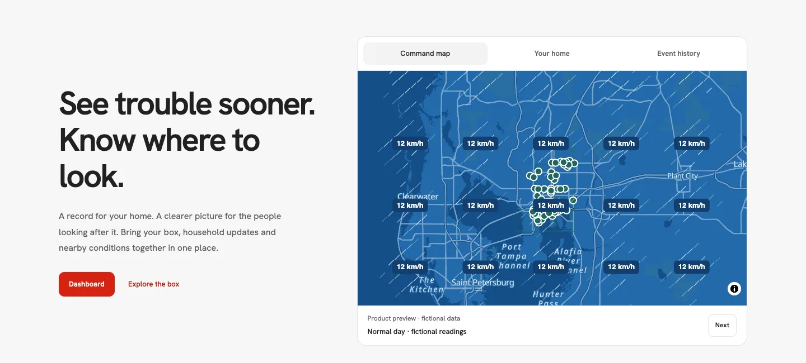

Safe Home
A sensor box for homes, a radio mesh that carries its readings out of an area with no internet, and a map for responders.
Built by four people at HackUTD 2026, UT Dallas, November 2026. It won two awards, including 3rd place in the State Farm track.

What it is
Safe Home is a prototype for the hours after a storm, when a home can lose power, Wi-Fi and cell service together and stop reporting. A small sensor box in each home records water, flame, tilt, mains power and connectivity. Boxes pass each other’s messages over a short-range radio mesh, so a box with no internet can still get a reading to a box that has it.
A cloud API stores the readings, applies fixed rules and adds public hazard feeds. Operators see the result on a map with a review queue. A hosted language model reads a bounded set of records through tools and drafts a cited brief for a person to check. Households get a separate view of their own box.
The purpose is to let response teams prioritise survivors who are without power or Wi-Fi. The repository calls the project a prototype, not a certified alarm or an emergency dispatch service.
HackUTD 2026
HackUTD 2026 was my first hackathon. The event is described as North America’s largest 24-hour hackathon. The team won two awards, including 3rd place in the State Farm track.
The team was Ayan Basheer, Adyaan Akram, Saif Yusuff and Dhruv Patel. The repository’s team notes credit the work like this.
- Ayan Basheer: product direction, design, the customer experience, the operator command workspace, infrastructure integration and release checks.
- Dhruv Patel: the core API, the firmware and hardware clients, and the alert thresholds.
- Adyaan Akram: the organization and database foundation, and the Nemotron integration.
- Saif Yusuff: the customer portal styling.
The first commit is dated November 7 at 1:53 pm Central. The repository holds 302 commits, the last on November 11. Until November 8 the product was called HomeBeacon, and the firmware and code identifiers still use that name.
How a reading travels
- The Uno Q reads the water, flame and tilt sensors once a second and writes one JSON line to box A.
- Box A applies a threshold with hysteresis to the water value: wet at a raw reading of 150 or more, dry again only below 80. It sends a snapshot every 30 seconds and an event whenever something changes.
- Box B sends its own boot message and heartbeats over encrypted radio. Box A, acting as gateway, acknowledges them.
- The gateway uploads each message with the device key of the box it came from. In the final demo a laptop on USB did the upload.
- The API drops duplicates by event id and writes the reading to a time-series collection. A water event opens a critical flood incident that stays open until an operator resolves it.
- The risk engine computes a status and a priority for each box and each map cell, and adds cached feed context.
- The operator map and review queue refresh about every 4 seconds. An operator can open the box, run a model investigation, or queue a message that the box collects the next time it polls.
- The household sees its own box in the customer portal, or asks an assistant connected over MCP.
The box
Two boxes were built. Box A is a Seeed XIAO ESP32-S3 that works as mesh node and gateway, with an Arduino Uno Q reading the sensors. Box B is a Seeed XIAO ESP32-C3 with no sensors. It relays messages and sends a heartbeat.
Sensors on box A
- A water level sensor on analog pin A0. The raw value was about 293 submerged and about 0 dry.
- An infrared flame sensor on A1. It tripped in ambient light during bench work.
- A tilt switch on D13 and an active buzzer on D11.
- A mains-present input: the power module’s 3.3 V pin read on D3, so the box can report that home power is off.
The Uno Q’s microcontroller samples these once a second and sends one JSON line over a serial link to the XIAO.
Power and radio
Power comes from a 6 x AA pack (9 V) through a breadboard power module, with diodes so USB and the batteries can feed the box together. Battery runtime was not measured. 24 hours is a design target. The only radio is the ESP32’s built-in 2.4 GHz radio, used for ESP-NOW between boxes and for Wi-Fi uplink. There is no LoRa and no cellular.
Planned, not fitted
A DS1307 clock did not answer on the Uno Q’s I2C bus, so time came from NTP, or from a gateway beacon when there was no internet. The firmware has build switches for a temperature and humidity sensor, an accelerometer, a motion sensor, a sound sensor, a display, a camera and a microSD journal. None were fitted for the demo. The temperature sensor never arrived.
The model is drawn from the parts list. It is not a scan of the printed enclosure.
The mesh and offline transport
In the model, click a house to take its box offline. The packets find another route to the house with the dish, which has internet.
Boxes talk with ESP-NOW, Espressif’s peer-to-peer protocol. It needs no router and carries frames of up to 250 bytes. Each link is a unicast AES-128 encrypted peer taken from a provisioned list of MAC addresses. The radio drops frames from unknown senders and from senders with the wrong key.
A message is one packed struct: type, time to live, hop count, origin, destination, boot counter, sequence number, timestamp, flag bits, raw sensor values and a 24-character event name. The types are reading, event, acknowledgement and beacon.
Routing
Routing is controlled flooding. A box that is not online resends each new message to every peer except the one it came from, and lowers the time to live, which starts at 5 hops. A table of the last 128 messages stops a box from forwarding the same one twice within 1.5 seconds. A message’s identity is an FNV-1a hash of its type, origin, boot counter and sequence number.
Gateways
Any box with working internet announces itself with a beacon every 5 seconds, and the beacon carries the time. The gateway queues relayed messages for upload and floods an acknowledgement back to the origin. After 20 seconds without a beacon the other boxes forget the gateway, so another box can take over.
Store and forward
The origin keeps up to 48 unacknowledged messages and resends them every 4 seconds until an acknowledgement arrives. The gateway remembers the last 256 delivered messages and re-acknowledges duplicates. The boot counter is saved to flash, so sequence numbers after a reboot do not collide.
What was measured
The model shows nine houses. The hardware tests used two boards, an ESP32-S3 and an ESP32-C3, running a mesh test sketch on November 8.
- Both directions passed with no radio failures once antennas were attached. Without antennas the first test delivered 0 to 10% of frames.
- During a 42-second gateway outage the sender held 14 messages. All were delivered within 7 seconds of the gateway coming back.
- In a wrong-key test the boards heard 60 frames and accepted none.
Multi-hop across three boards and gateway handover with real data are written as tests with no recorded result.
Limits
All boxes must share one Wi-Fi channel: the hotspot’s, or channel 1. One hop reaches about 100 to 200 m in open air. ESP-NOW’s default limit is about 7 encrypted peers, so the firmware allows 8 nodes. Every box holds every box’s device key, a trade-off made for the demo. The repository says a real deployment would use LoRa or Thread.
Offline 0. Reporting 8 of 8.
Firmware and edge software
The ESP32 firmware is Arduino C++ with ArduinoJson 7. Shared headers are edited once and copied into each sketch by a sync script. The Uno Q sketch is built with arduino-cli.
| Piece | Lines | What it does |
|---|---|---|
| Shared headers | 962 | Mesh, protocol, uplink, local history, history sync, power policy, root certificates |
| Box A sketch | 378 | Mesh node and gateway. Reads sensor lines from the Uno Q |
| Box B sketch | 221 | Relay-only node with a heartbeat |
| Mesh test sketch | 135 | Runs on two bare boards with no API keys |
| Uno Q sensor reader | 74 | Samples the sensors and writes the JSON line |
| Offline hub | 142 | Python and SQLite, with a password-protected page on the local network |
| Uno Q agent | about 6,400 | 20 Python 3.11 modules using only the standard library: service, updater with checksum and rollback, power modes, self-check, support bundle |
The uplink code uses Wi-Fi and HTTPS with pinned root certificates. Uploads queue on a microSD card when one is fitted, and otherwise in a 40-message RAM queue. A USB gateway mode lets a computer do the upload while the box still acts as mesh gateway.
Box A keeps a bounded history in flash and syncs it when its own Wi-Fi returns. A power policy header defines normal, saver and critical reporting rates. It has tests and is not wired into either sketch. Serial commands such as selftest, mesh, ping and queue print PASS or FAIL on the bench.
The Uno Q agent’s self-test passed on the board. Installing it as a system service was blocked by root access, so it did not run as a service.
The backend
The server is JavaScript on Cloudflare Pages Functions, about 12,850 lines, with MongoDB Atlas as the database. A separate Cloudflare Worker runs every minute to refresh feed data and daily statistics. There is no framework and no Python backend.
Ingest
- Validate the body, check the box’s device key (stored hashed) and require a home assignment.
- Reserve a receipt keyed by device and event id. A repeat of the same payload returns the stored answer. A changed payload with the same id returns 409.
- Write to the telemetry time-series collection, which keeps 30 days. Evaluate hazards, update the device and complete the receipt.
The box’s clock time and the server’s receipt time are stored separately, so a late upload is not shown as fresh.
Incidents
An incident stays open until an operator resolves it. Water detected opens a critical flood incident. External power lost opens a medium outage incident. A temperature of 55 C or more opens a high-temperature incident. A unique key allows one active incident per device and type.
Risk rules
The risk engine is a set of pure functions. Status runs from unknown through normal, watch and elevated to critical. Missing data is unknown, never normal. A box silent for more than 15 minutes is offline.
Rules can depend on duration. With mains power off a box is on watch at once, elevated after 1 hour and critical after 4 hours. A flame reading is critical at once. Readings outside the possible range are discarded and logged, not clamped. Areas are geohash cells, and a cell needs 3 or more boxes before it is reported.
Priority is scored separately: P1 is 80 points or more and P2 is 40 or more. Hazard context adds points: 15 inside an evacuation zone, 10 in a FEMA flood hazard area, 10 with a weather alert, and 10 for heavy rain together with a water signal.
Other parts
- Operators queue short messages for a box. The box polls and acknowledges. A message is queued, delivered, acknowledged, expired or cancelled.
- Operator sessions, customer sessions, per-box device keys and customer OAuth tokens are kept separate.
- Households pair a box by address, register boxes they built (up to 5 per account) and invite others by link.
- A seeded, deterministic simulation engine generates 1 to 500 synthetic devices. The browser, the HTTP API, the command line and the MCP server share it.
- Email through Resend is implemented. Sending to households is switched off.
Delivery and tests
GitHub Actions runs the tests, a MongoDB check and the build on Node 22, then deploys pull-request previews and the main branch to Cloudflare Pages. The repository records 712 JavaScript tests passing with none failing on its latest full run, on November 10. It also has 10 browser scripts and 242 Python tests for the Uno Q agent and the model gateway. Accessibility audits use axe-core through Playwright.
The operator map and household portal
The front end is vanilla JavaScript and CSS bundled with esbuild, with no React. The map is MapLibre GL on OpenFreeMap street tiles. It shows the lower 48 states with zoom to a state, a point for each box and overlays for each data source.
The operator workspace has the map, a page for each box (conditions, sensors, logs, messages and a workflow canvas), a review queue, and a table of alert thresholds generated from the same configuration the server uses. Operator pages refresh about every 4 seconds and customer pages about every 10.
Map views cover wind, sunlight, UV, temperature, flood, terrain, fire, air quality and fault lines. The workflow canvas draws an event’s recorded timeline as cards and connectors and never calls a model. The household portal shows one household’s box in plain wording, with a three.js view of the enclosure.

Public alert feeds
The server fetches public hazard data, caches it per map tile in MongoDB with an expiry, and serves it as GeoJSON with the fetch time, its age and a stale flag. Feeds add points to priority and context to the map. They never change a box’s status. A feed that failed or was never fetched is reported as unverified and treated as unknown. Fire detections, air quality and grid demand need an API key held on the server.
| Layer | Source | Refresh |
|---|---|---|
| Weather alerts | National Weather Service active alerts | 2 min |
| Flood hazard zones | FEMA National Flood Hazard Layer | 24 h |
| Disaster declarations | OpenFEMA, with Census county outlines | 24 h |
| River gauges | USGS stream stage | 10 min |
| Earthquakes | USGS daily feed | 5 min |
| Rain | Open-Meteo, 24-hour precipitation per cell | 30 min |
| Open shelters | FEMA National Shelter System | 10 min |
| Fire detections | NASA FIRMS, VIIRS NOAA-20 | 15 min |
| Air quality | AirNow | 30 min |
| Grid demand | EIA hourly ERCOT demand | 1 h |
| Wind, sun, UV, temperature | Open-Meteo, 60 fixed lower-48 points | 30 min |
| Fault lines | USGS Quaternary fault database | 24 h |
The AI assistant
The model is NVIDIA Nemotron Nano 9B v2. It was served by vLLM in Docker on one rented L40S GPU with 48 GB of memory, bound to localhost behind a small authenticated Python gateway and a Cloudflare tunnel. Calls are chat completions with tool definitions, at temperature 0, with at most 1,200 output tokens, not streamed, and with thinking switched off. The model does not run on the boxes.
| Use | What the model does | What the server enforces |
|---|---|---|
| Box investigation | Four tool steps: read the sensor timeline, correlate signals, check health and connectivity, save a checkpoint. Writes a responder brief that separates recorded facts, interpretation and unknowns. | The server builds the evidence: the target box and up to 7 others in the same home. Citations must point to records that were supplied. Unsupported actions get one correction, then fail. Runs are kept 30 days. |
| Fleet review | Three tools: read a shortlist, check for gaps, save a checkpoint. Explains a review queue it cannot reorder. | Queue order comes from fixed rules. The scan is capped at 240 devices and 12 groups, 4 model rounds and 55 seconds. Four runs per operator per minute. |
| Map view | Turns a plain-language request into 1 to 3 of six fixed filters, such as power lost or water. | The server checks the filter names and runs the filters itself. |
| Household assistants | A remote MCP server with five read-only tools: build guide, list devices, device reports, run a simulation, simulation settings. | OAuth with customer-scoped tokens. No addresses, names or keys are returned. |
A harness builds each prompt from the code’s own thresholds, a runbook and five short knowledge files, trimmed to a token budget. Outside text such as alert wording and device names is wrapped and stripped of control characters. Golden test cases with a deterministic grader reject claims about occupancy, safe entry, damage, coverage and dispatch.
The model cannot run database queries, change a status, send a message or command hardware. If the provider fails, the app reports the failure. It does not fall back to the scripted simulator, which is labelled as not AI.
Recorded runs: all four investigation tools completed on synthetic records, and one production run on the bench Uno Q finished with four tool steps and three citations. The GPU had a shutdown timer set for the evening of November 8, so the hosted model is not expected to be running now.
What was real at the demo
Real
- Water, flame and tilt sensors on the Uno Q, read once a second.
- Dipping the water sensor produced a water event, and the live command center showed box A as critical with an open flood incident.
- Box B’s boot message and heartbeats crossed encrypted ESP-NOW to box A and appeared in the cloud as a separate device.
- Earlier on November 8, box A joined a phone hotspot, became the gateway and uploaded with no laptop in the path.
- 30 consecutive physical samples were accepted over 5 minutes 29 seconds.
- Store and forward and wrong-key rejection were measured on two bare boards.
- Real Nemotron inference through the deployed app, including one run on the bench device, and live public feeds.
Simulated or stood in
- For the final demo box A’s Wi-Fi join kept failing, so a laptop on USB did the upload.
- Everything beyond the two boxes: 95 fictional homes in four scenarios on the demo page, and up to 500 synthetic devices in the simulation page. Neither writes to the live database.
- The Wi-Fi status card for the Uno Q hub is a server-side display setting. The actual Wi-Fi observation was false.
- The battery runtime in the customer portal, about 6 hours, is an estimate from assumed inputs.
- Box B carried no sensors. The camera, microSD journal, sound, motion and accelerometer inputs and the display were not in the demo build.
- Insurer response, dispatch and notification flows take no outside action.
Limits
- It is a prototype, not a certified alarm or a dispatch service.
- Battery runtime has not been measured. Power-loss tests, replay after internet removal and multi-hop tests on the real firmware are still to do.
- ESP-NOW has short range and works on one channel. A gateway still needs its own internet.
- The flame and sound inputs are proxies, not certified detectors.
- The cloud rule for water, a raw reading of 1500 for 2 minutes, would not fire on the bench sensor, which read about 293. The demo flood incident came from the water event flag.
- Receipt and time-series writes are not atomic. An interrupted ingest needs manual reconciliation.
- On the free Cloudflare plan, Functions have a 10 ms CPU limit, and ingest returned 503 for exceeding it at least once.
- The system never states occupancy, safe entry, damage, insurance coverage or dispatch.
- The source repository is private and unlicensed.